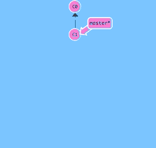
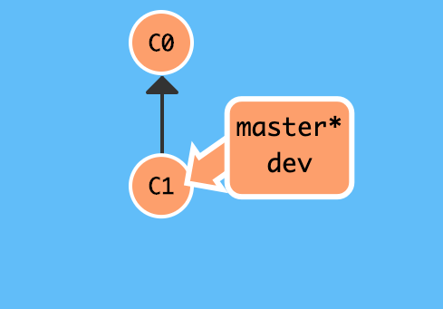
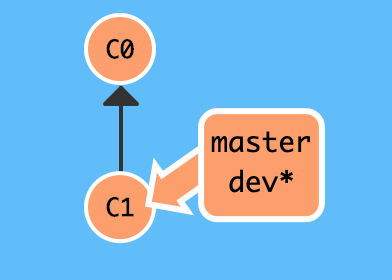
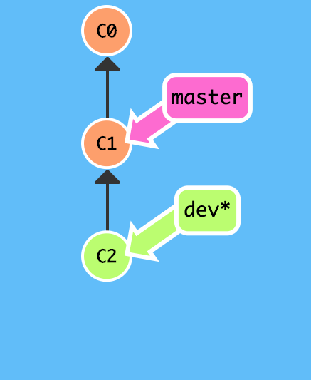
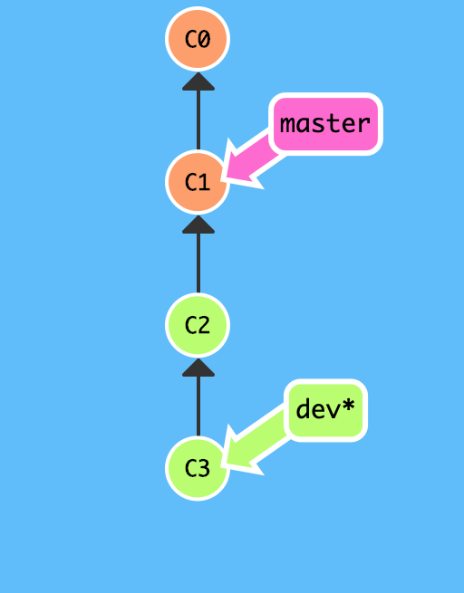
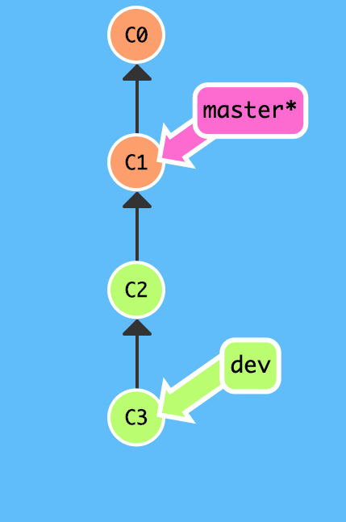
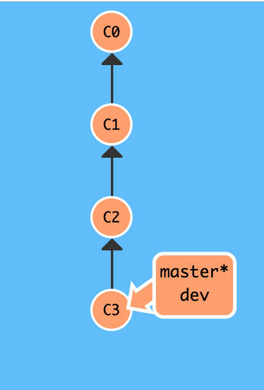
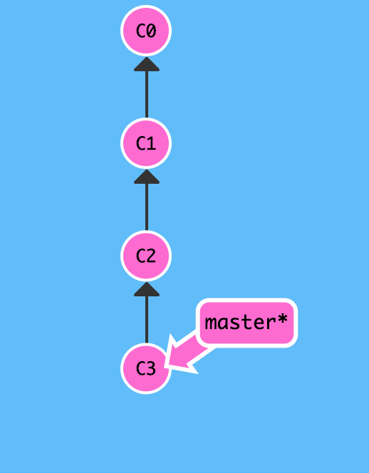

1. 分支总览
分支就是一条独立的时间线,既有分支,必有主干,正如一棵树谈到树枝,必有树干一样的道理.我们先前对git 的全部操作默认都是在主干上进行的,这个主干也是一种特殊的分支,名为 master 分支.
无论是穿越历史还是撤销更改,我们都或多或少接触过时间线,git 管理的版本串在一起就组成了这个时间线,其中master 分支是当前分支,HEAD 指向master ,因此HEAD 相当于指向了最新的版本.

基于分支上的操作,每一次 commit 都会提交一个新版本,并且新的 commit 指向原来的 commit,这来最新的 commit 就可以往前找,直到找到最初的commit.这就是 git 的时间线.
当我们打算开辟新的时间线时,git 在当前 HEAD 指向的 master 分支的 commit 处新建一个 dev 分支.如果主角没有主动进入时间线的话,那么仍然处于 master 分支,进入的方法就是 HEAD指向新建的 dev 分支.
不考虑孙悟空的分身特效,主角不能同时处于不同的时空下,git 也是如何,HEAD 只能指向某一个 commit ,既然刚刚已经指向了 dev 分支,所以原来的 master 分支就没有 HEAD 了,因为相当于master 分支静止了.
当主角在 dev 分支独自闯荡干出一番事业时,决定回到故乡 master 分支,并将出门在外所学的本领带回家乡,建设美好家园.master 分支因为合并了 dev 分支,所以一下子增添了很多内容,家乡焕然一新!
主角这次携带 dev 分支归来,HEAD 分支自然又回到了 master 分支上,年轻的心向往外面的世间,相信不久后还会有同样的故事发生...
下面详解分支相关命令
1.1. 创建分支
创建 dev 分支,列出分支已验证是否创建成功
# 创建分支
$git branch dev
# 列出分支
$ git branch
dev
* master
$
*
master前面的 * 标记表明当前仍然处于master分支

1.2. 切换分支
切换到新分支以便在分支上开展工作
# 切换分支
$ git checkout dev
Switched to branch 'dev'
# 列出分支
$ git branch
* dev
master
$

现在,我们在 dev 分支上奋笔疾书,先后提交两个版本后完成分支开发工作:
# 查看当前文件列表
$ ls
LICENSE README.md test.txt
# 查看目标文件内容
$ cat test.txt
add test.txt
see https://snowdreams1006.github.io/git/usage/remote-repository.html
# 第一个版本: learn git branch
$ echo "learn git branch" >> test.txt
$ git add test.txt
$ git commit -m "learn git branch"
[dev 9c30e50] learn git branch
1 file changed, 1 insertion(+)
# 第二个版本: see https://snowdreams1006.github.io/git/usage/branch-overview.html
$ echo "see https://snowdreams1006.github.io/git/usage/branch-overview.html" >> test.txt
$ git add test.txt
sunpodeMacBook-Pro:git-demo sunpo$ git status
On branch dev
Changes to be committed:
(use "git reset HEAD <file>..." to unstage)
modified: test.txt
$ git commit -m "see https://snowdreams1006.github.io/git/usage/branch-overview.html"
[dev 413a4d1] see https://snowdreams1006.github.io/git/usage/branch-overview.html
1 file changed, 1 insertion(+)
 
此时,再从 dev 分支切换回 master 分支,合并dev分支前看一下当前文件内容:
# 切换回 master 分支
$ git checkout master
Switched to branch 'master'
Your branch is up to date with 'origin/master'.
sunpodeMacBook-Pro:git-demo sunpo$ git status
On branch master
Your branch is up to date with 'origin/master'.
nothing to commit, working tree clean
# 查看当前文件列表
$ ls
LICENSE README.md test.txt
# 查看文件内容: 无 dev 分支更改
$ cat test.txt
add test.txt
see https://snowdreams1006.github.io/git/usage/remote-repository.html
$

1.3. 合并分支
切换回 master 分支并没有我们在 dev 分支的更改,因为两条时间线是独立的,现在合并 dev 分支,再看一下当前文件内容:
# 合并 dev 分支
$ git merge dev
Updating b3d8193..413a4d1
Fast-forward
test.txt | 2 ++
1 file changed, 2 insertions(+)
# 查看文件内容: 已经存在 dev 分支的更改!
$ cat test.txt
add test.txt
see https://snowdreams1006.github.io/git/usage/remote-repository.html
learn git branch
see https://snowdreams1006.github.io/git/

1.4. 删除分支
合并分支后,dev 分支的历史使命已经完成,应该及时清空不必要分支.
# 删除 dev 分支
$ git branch -d dev
Deleted branch dev (was 413a4d1).
# 列出当前分支: 只剩下 master 分支
$ git branch
* master
$

以上场景包括了分支的常用操作,创建分支(git branch <name>),切换分支(git checkout <name>),删除分支(git branch -d <name>)一系列操作十分流畅,因此 git 鼓励我们大量使用分支!
1.5. 小结
- 列出分支
git branch - 创建分支
git branch <name> - 切换分支
git checkout <name> - 创建并切换分支
git checkout -b <name> - 合并指定分支到当前分支
git merge <name> - 删除分支
git branch -d <name>
作者: 米米论坛
链接: https://hebye.github.io/git/usage/branch-overview.html
来源: 米米论坛
本文原创发布于「米米论坛」,转载请注明出处,谢谢合作!